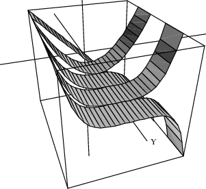

10.2 A Ribbon Program¶
The above approach creates a new viewport for each additional ribbon. A better approach is to build one object composed of all ribbons before creating a viewport. To do this, use makeObject rather than draw. The operations have similar formats, but draw returns a viewport and makeObject returns a space object.
We now create a function drawRibbons of two arguments: flist, a list of formulas for the ribbons you want to draw, and xrange, the range over which you want them drawn. Using this function, you can just say
drawRibbons([x^2, x^3], x=-1..1)
to do all of the work required in the last section. Here is the drawRibbons program. Invoke your favorite editor and create a file called ribbon.input containing the following program.
drawRibbons(flist, xrange) ==}{}
sp := createThreeSpace() Create empty space $sp$.
- y0 := 0 The initial ribbon position.
- for f in flist repeat For each function $f$, makeObject(f, xrange, y=y0..y0+1, create and add a ribbon
space==sp, var2Steps == 1) for $f$ to the space $sp$.
- y0 := y0 + 1 The next ribbon position.
- vp := makeViewport3D(sp, “Ribbons”) Create viewport. drawStyle(vp, “shade”) Select shading style. outlineRender(vp, “on”) Show polygon outlines. showRegion(vp,”on”) Enclose in a box. n := # flist The number of ribbons
zoom(vp,n,1,n) Zoom in x- and z-directions.
- rotate(vp,0,75) Change the angle of view.
- vp Return the viewport.
The first drawRibbons function.
Here are some remarks on the syntax used in the drawRibbons function (consult Chapter ugUser for more details). Unlike most other programming languages which use semicolons, parentheses, or begin–end brackets to delineate the structure of programs, the structure of an FriCAS program is determined by indentation. The first line of the function definition always begins in column 1. All other lines of the function are indented with respect to the first line and form a pile (see ugLangBlocks ).
The definition of drawRibbons consists of a pile of expressions to be executed one after another. Each expression of the pile is indented at the same level. Lines 4-7 designate one single expression: since lines 5-7 are indented with respect to the others, these lines are treated as a continuation of line 4. Also since lines 5 and 7 have the same indentation level, these lines designate a pile within the outer pile.
The last line of a pile usually gives the value returned by the pile. Here it is also the value returned by the function. FriCAS knows this is the last line of the function because it is the last line of the file. In other cases, a new expression beginning in column one signals the end of a function.
The line drawStyle(vp,”shade”) is given after the viewport has been created to select the draw style. We have also used the zoomzoomThreeDimensionalViewport option. Without the zoom, the viewport region would be scaled equally in all three coordinate directions.
Let’s try the function drawRibbons. First you must read the file to give FriCAS the function definition.
Read the input file.
)read ribbon
Draw ribbons for for -1≤x≤1
drawRibbons([x^i for i in 1..5],x=-1..1)
